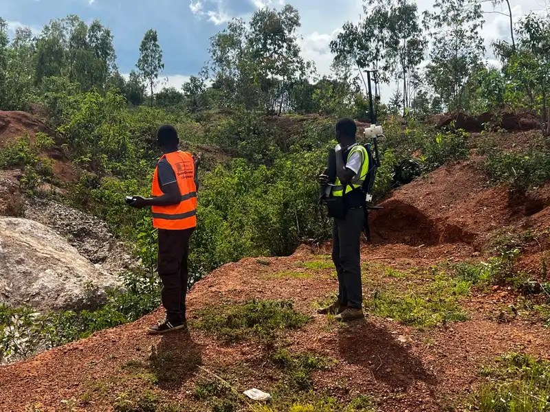

2D and 3D Electrical Resistivity Tomography for dam foundations, groundwater, geothermal, and mineral exploration — the most versatile shallow geophysical method for imaging the subsurface across Uganda and East Africa.
Electrical Resistivity Tomography (ERT) is a geophysical method that images the electrical resistivity of the subsurface. A linear or grid array of metal electrodes is laid out on the ground surface. An electrical current is injected between pairs of electrodes while the resulting voltage is measured at others. Because different earth materials conduct electricity differently — water-saturated rock is conductive, dry rock is resistive, clay is very conductive, and mineralised zones often stand out — the measured resistivities reveal the geology below.
By combining measurements from many electrode pairs and mathematically inverting them, ERT produces a continuous 2D (or 3D) cross-section of true resistivity. An ERT survey in Uganda is used for dam foundation characterisation, groundwater exploration and borehole siting, geothermal resource assessment, mineral exploration, and infrastructure site investigation.
Georesolve Africa operates multi-channel resistivity instrumentation capable of long electrode spreads for deep imaging. We have delivered ERT surveys for dam foundations in Rwanda (Gasabo Water Dam, Rweru Sector), groundwater and irrigation schemes, and deep ERT for pegmatite targeting. Our data processing uses advanced inversion algorithms that account for topography, producing geologically realistic resistivity models.
| Component | Specification |
|---|---|
| Resistivity meter | Multi-channel, high-precision resistivity meter with automatic current reversal, stacking, and self-potential (SP) correction for low-noise measurements |
| Electrodes | Stainless steel or copper-coated stakes, 30–50 cm length, with electrolyte gel for good ground contact. Porous pot electrodes for long-duration monitoring |
| Configurations | Wenner, Schlumberger, and dipole-dipole arrays selected per target depth, resolution, and noise conditions |
| Cabling | Switching cables and multiplexer units supporting 48+ electrodes per line, with roll-along capability for continuous long spreads |
| Power | Rechargeable high-current transmitter with variable output for deep sounding without excessive electrode polarisation |
| Processing | 2D/3D resistivity inversion software with topography correction (e.g. Res2Dinv / Res3Dinv) |
Map weathering, fracturing, clay-filled faults, and seepage pathways along the dam axis and abutments.
Locate aquifers, define saturated thickness, and site water boreholes in fractured and weathered basement.
Identify low-resistivity geothermal reservoirs and caprock continuity for geothermal energy projects.
Image pegmatite bodies, sulphide zones, and alteration halos for drill-target generation.
Map contaminant plumes, sinkholes, and buried voids for environmental and engineering site investigation.
Characterise valley-fill thickness and foundation conditions for irrigation and civil works.

Georesolve delivered a deep Electrical Resistivity Tomography (ERT) survey in the Gasabo District of Rwanda to image a pegmatite body and support drill-target generation for pegmatite-hosted tin-tantalum-cobalt mineralisation.
The resistivity cross-sections revealed the geometry and extent of the pegmatite intrusion at depth, identifying high-resistivity bodies consistent with mineralised pegmatite. The ERT results were integrated with ground magnetic and geological data to define priority drill targets.
ERT (Electrical Resistivity Tomography) is a geophysical method that images the electrical resistivity of the subsurface. A linear or grid array of electrodes is laid out on the ground, and an electrical current is injected between pairs of electrodes while the resulting voltage is measured at others. By measuring apparent resistivity at many electrode combinations and inverting the data, a 2D or 3D cross-section of true resistivity is produced, revealing geological layers, fractures, voids, and water-bearing zones.
ERT is used in Uganda for dam foundation characterisation (mapping weathering, fractures, and weak zones), groundwater exploration and borehole siting, geothermal resource assessment, mineral exploration (imaging ore bodies and pegmatites), contaminant plume mapping, cavity and sinkhole detection, and infrastructure site investigation. It is one of the most versatile shallow geophysical methods.
ERT investigation depth is roughly one-fifth to one-third of the total electrode spread length. A 200-metre spread typically reaches 40 to 60 metres, while a 500-metre spread can image to 100 metres or more. Deeper targets require longer spreads, lower-frequency signals, and good electrical contact with the ground. Georesolve selects electrode spacing to balance depth of investigation with near-surface resolution for each project.
VES (Vertical Electrical Sounding) measures resistivity at a single location by expanding electrode spacing symmetrically, producing a 1D vertical resistivity profile at that point. ERT measures across an array of electrodes, producing a continuous 2D (or 3D) resistivity cross-section. ERT is far more informative because it shows lateral variations and geological structure, whereas VES only shows vertical layering at one point. Georesolve primarily uses ERT, with VES deployed for rapid 1D reconnaissance where appropriate.
For dams, ERT images the foundation along the dam axis and abutments, mapping zones of weathered rock, fracturing, clay-filled faults, and preferential seepage pathways. This information guides foundation treatment, grouting design, and seepage risk assessment. Georesolve has delivered deep ERT surveys for dam foundations in Rwanda, including the Gasabo Water Dam and the Rweru Sector pegmatite programme.
The cost of an ERT survey depends on the total electrode spread length, number of lines or grid points, terrain and vegetation, electrode configuration used, and the level of inversion and interpretation. Georesolve Africa provides tailored quotes based on your project area and objectives. Contact us for a detailed proposal.
Talk to Georesolve Africa about an ERT survey for your dam, groundwater, geothermal, or mineral exploration project in Uganda and East Africa.
Request a Quote